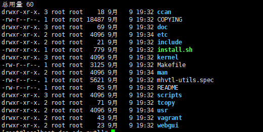
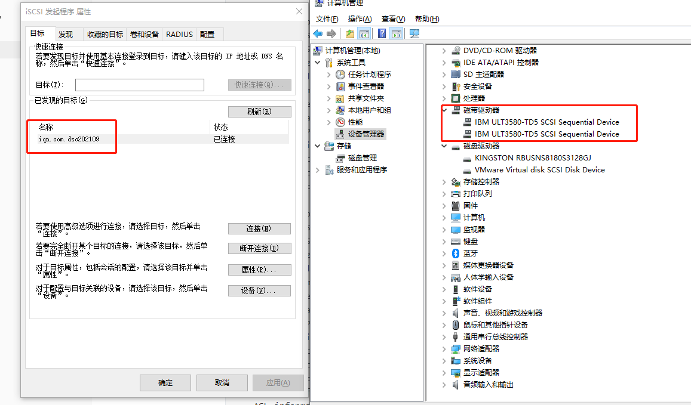

一、mhvtl 安装
1、依赖环境安装
- 依赖安装
# 安装依赖 |
lsscsi查看SCSI设备信息(必选)mtx操作带库机械臂(必选)mt-st– 操作带库的驱动(必选)sg3_utils、iscsi-initiator-utils用于使用 SCSI 命令集的设备的实用程序scsi-target-utils安装stgt以便将磁带机分配给其他服务器上的备份软件使用
开启iSCSI服务：
# centos6 |
sysstatLinux系统管理工具包(可选)
2、下载mhvtl源码
Github地址：https://github.com/markh794/mhvtl
使用Git下载源码：
git clone https://github.com/markh794/mhvtl.git下载之后，大致目录如下：

- 进入到如上图的目录后，执行命令编译安装：
# 根据内核，安装对应的内核开发工具，如果对应的内核没安装成功，可能会导致后面的步骤安装失败 |
- 安装成功后，即可启动服务
# 把mhvtl加入开机自启动计划 |
二、mhVTL的使用
- 简单命令使用
1、查看磁带库设备相关信息
命令：
lsscsi -g
# 结果如下：
[root@localhost dcs-ods-nvtl]# lsscsi -g
[0:0:0:0] disk VMware Virtual disk 2.0 /dev/sda /dev/sg0
[3:0:0:0] cd/dvd NECVMWar VMware SATA CD00 1.00 /dev/sr0 /dev/sg1
[33:0:0:0] mediumx STK L700 0106 /dev/sch1 /dev/sg6
[33:0:1:0] tape IBM ULT3580-TD5 0106 /dev/st5 /dev/sg9
[33:0:2:0] tape IBM ULT3580-TD5 0106 /dev/st4 /dev/sg8
[33:0:3:0] tape IBM ULT3580-TD4 0106 /dev/st2 /dev/sg5
[33:0:4:0] tape IBM ULT3580-TD4 0106 /dev/st1 /dev/sg4
[33:0:8:0] mediumx STK L80 0106 /dev/sch0 /dev/sg2
[33:0:9:0] tape STK T10000B 0106 /dev/st3 /dev/sg7
[33:0:10:0] tape STK T10000B 0106 /dev/st0 /dev/sg3
[33:0:11:0] tape STK T10000B 0106 /dev/st7 /dev/sg11
[33:0:12:0] tape STK T10000B 0106 /dev/st6 /dev/sg10
# 返回值解析
# 第1列：SCSI设备id：host, channel,id,lun。
# 第2列：设备类型。
# 第3，4，5列：设备厂商，型号，版本信息。
# 第6列：设备主节点名。
# 最后一列： sg设备名类型为：
mediumx为两个磁带机（机械手）,例：/dev/sg6、/dev/sg2- 其中
/dev/st5、/dev/st4、/dev/st2、/dev/st1分别表示·/dev/sg6的磁带驱动器，刚好对应从0索引开始 - 同理可知
/dev/st3、/dev/st0、/dev/st7、/dev/st6分别表示·/dev/sg2的磁带驱动器，刚好对应从0索引开始
- 其中
类型为：
tape的就是磁带驱动器，8个驱动器
- lsscsi 命令参数含义：
-g 显示SCSI通用设备文件名称 |
2、磁带相关命令
- 磁带的相关命令
①、查看机械手状态
# 查看机械手状态: mtx -f /dev/sg6 status |
②、加载与卸载磁带
- 如下
# 装载磁带命令格式：mtx -f <机械手设备号> load <slots> <drive> |
③、磁带数据读写命令
- 可以使用tar命令
# 向驱动器读数据，假如磁带上没有任何文件，则列目录会报错，忽略即可。 |
④、其他常用命令
- 如下
# 移动磁带，从 8 插槽移动到2插槽 |
3、vtlcmd命令使用
- 来看看文档先
Usage : vtlcmd <DeviceNo> <command> [-h|-help] |
① 、map命令的使用
- map 命令主要是把磁带放入磁带机或从磁带机拿走
- 命令格式：
vtlcmd <DeviceNo> <command>
# 列出可以操作的磁带 |
②、创建磁带
- 可以使用mktape,文档如下：
Usage: mktape [OPTIONS] [REQUIRED-PARAMS]Where OPTIONS are from: |
- 示例如下：
# -l 是虚拟带库的ID，-m 是条形码，-s 是磁带容量，-t是磁带存储类型，-d 是磁带型号 |
三、ISCSI相关
简介
- iSCSI 这个架构主要将储存装置与使用的主机分为两个部分，分别是：
iSCSI target：就是储存设备端，存放磁盘或 RAID 的设备，目前也能够将 Linux 主机仿真成 iSCSI target 了！目的在提供其他主机使用的『磁盘』iSCSI initiator：就是能够使用 target 的客户端，通常是服务器。 也就是说，想要连接到 iSCSI target 的服务器，也必须要安装 iSCSI initiator 的相关功能后才能够使用 iSCSI target 提供的磁盘就是了
所需软件与软件结构
CentOS 将 tgt 的软件名称定义为scsi-target-utils ，因此你得要使用 yum 去安装他才行。至于用来作为 initiator 的软件则是使用 linux-iscsi 的项目，该项目所提供的软件名称则为iscsi-initiator-utils 。所以，总的来说，你需要的软件有：
scsi-target-utils：用来将 Linux 系统仿真成为 iSCSI target 的功能；iscsi-initiator-utils：挂载来自 target 的磁盘到 Linux 本机上。
那么 scsi-target-utils 主要提供哪些档案呢？基本上有底下几个比较重要需要注意的：
/etc/tgt/targets.conf：主要配置文件，设定要分享的磁盘格式与哪几颗；/usr/sbin/tgt-admin：在线查询、删除 target 等功能的设定工具；/usr/sbin/tgt-setup-lun：建立 target 以及设定分享的磁盘与可使用的
客户端等工具软件。
/usr/sbin/tgtadm：手动直接管理的管理员工具 (可使用配置文件取代)；/usr/sbin/tgtd：主要提供 iSCSI target 服务的主程序；/usr/sbin/tgtimg：建置预计分享的映像文件装置的工具 (以映像文件仿真磁盘)；
其实 CentOS 已经将很多功能都设定好了，因此我们只要修订配置文件，然后启动 tgtd 这个服务就可以了！ 接下来，就让我们实际来玩一玩 iSCSI target 的设定吧！
1、target端
# 目标端，服务端 |
- 或者直接使用磁带相关，如下：
# 查看磁带库设备相关信息 |
- 还有用命令的方式：
# 将机械臂和驱动器通过ISCSI的方式映射出去 |

2、iscsi客户端相关命令
- 简单命令
# 服务发现 |